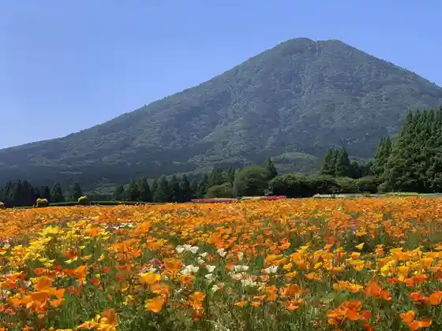
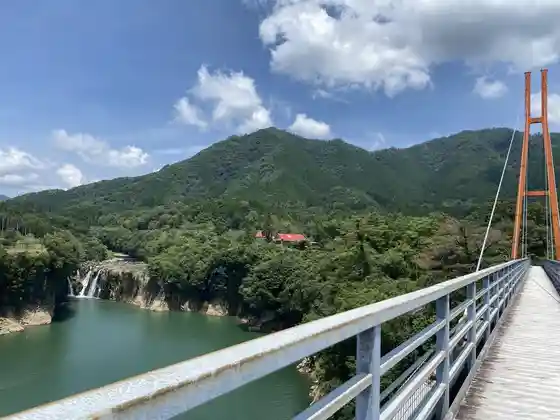
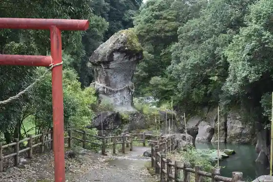
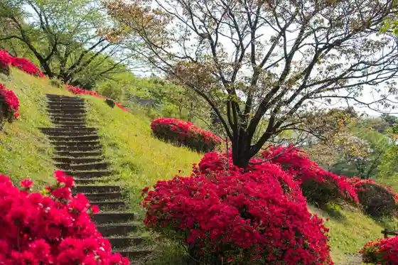

Ikoma Highlands
Kobayashi, Miyazaki · 0984-27-1919 · Official / source link

Sukimurando
Kobayashi, Miyazaki · 0984-48-2480 · Official / source link

Inyo Ishi
Kobayashi, Miyazaki · 0984-22-8684 · Official / source link

Kiri Shima Mine Shrine
Kobayashi, Miyazaki · 0984-23-0855 · Official / source link
Hagi no Chaya
Kobayashi, Miyazaki · 0984-46-0331 · Official / source link

Shutsu no Yama Park
Kobayashi, Miyazaki · 0984-23-1174 · Official / source link
Sannomiya Kyo
Kobayashi, Miyazaki · 0984-27-3280 · Official / source link
no Jirikopia
Kobayashi, Miyazaki · 0984-44-3000 · Official / source link
Hinamori Oto Campground
Kobayashi, Miyazaki · 0984-23-8100 · Official / source link
Shin Nen Gaku
Kobayashi, Miyazaki · 0984-22-8684 · Official / source link
Sukimurando Dai Tsuribashi
Kobayashi, Miyazaki · 0984-25-9500 · Official / source link
Roadside Station Yu
Kobayashi, Miyazaki · 0984-44-2210 · Official / source link
Kobayashi Sogo Sports Park (Viewpoint Plaza)
Kobayashi, Miyazaki · 0984-24-0556 · Official / source link
Miyazaki Kobayashi Kantorii Club (Kyu : Jieizu Kobayashi)
Kobayashi, Miyazaki · 0984-23-3111 · Official / source link
Kobayashi Sogo Sports Park (Yakyujo)
Kobayashi, Miyazaki · 0984-22-7911 · Official / source link
Kobayashi Ikoma Kogen Budo Sake Workshop
Kobayashi, Miyazaki · 0984-25-2662 · Official / source link
Makiba Cherry Blossoms
Kobayashi, Miyazaki · 0984-22-8684 · Official / source link
Kobayashi Sogo Sports Park (Rikujokyogijo)
Kobayashi, Miyazaki · 0984-24-0556 · Official / source link
Kobayashi Sogo Sports Park (Tenisukoto)
Kobayashi, Miyazaki · 0984-24-0556 · Official / source link
Kobayashi Shimin Gym
Kobayashi, Miyazaki · 0984-22-7911 · Official / source link
Nojiri Town Otsuka Hara Undo Plaza
Kobayashi, Miyazaki · 0984-44-1100 · Official / source link
Hinamori Dai Kurosukantoriikosu (Yamazakurakosu)
Kobayashi, Miyazaki · 0984-23-6046 · Official / source link